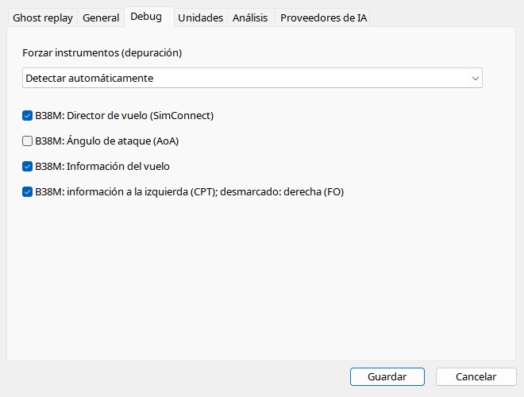

Automático elige por ICAO y datos. Override compara renderizadores sin cambiar identidad. Cambiar entre six-pack, PFD, B38M y A320 no crea SDK ausente. Las opciones B38M controlan información, lado CPT/FO, AoA y FD. Desactive FD si el addon no publica órdenes estándar.
| Opción / acción | Funcionamiento y limitaciones |
|---|---|
| Automático | Selecciona desde grabación; override no genera SDK de otro avión. |
| Familia | GA analógico, GA glass, airliner clásico, PFD genérico, B38M PFD/EICAS o A320 PFD/ECAM; metadatos intactos. |
| Información | Número/squawk/matrícula/SELCAL/tiempo, activada por defecto. |
| Lado | Marcado = izquierda/CPT, sin marcar = derecha/FO; independiente de visibilidad. |
| AoA | Desactivado por defecto; incidencia válida e inhibición terrestre. |
| FD | Activado por defecto; comandos estándar SimConnect grabados. Desactive con valores inútiles del addon. |
